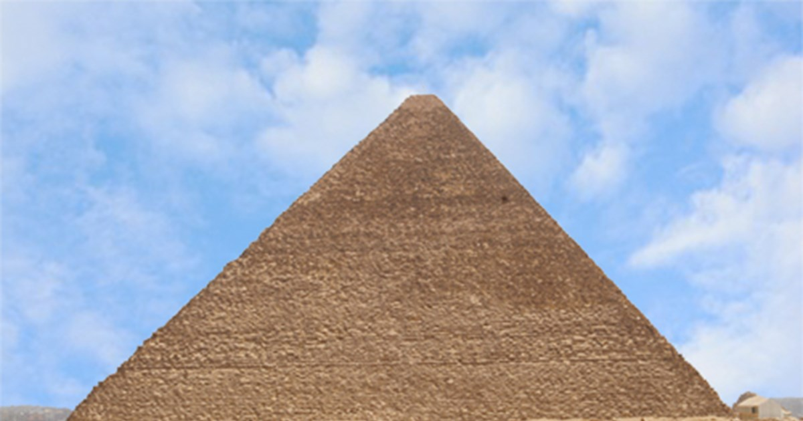

مقدمة
يُعد هرم الملك خوفو، المعروف بالهرم الأكبر، أشهر وأضخم بناء في تاريخ الحضارة البشرية، وهو أقدم عجائب الدنيا السبع التي ما تزال صامدة حتى اليوم. يقع الهرم في هضبة الجيزة غرب القاهرة، ويُعتبر التحفة المعمارية الأكبر في مصر القديمة، بل في العالم القديم بأسره. بُني الهرم في عهد الملك خوفو، ثاني ملوك الأسرة الرابعة، مع تقديرات تشير إلى أنه اكتمل خلال حوالي 20 إلى 25 عامًا. هذا العمل الهندسي العملاق يعكس براعة العقلية المصرية القديمة، وقدرتها على تخطيط وتنفيذ مشاريع مذهلة دون تقنيات حديثة.
سبب بناء الهرم ودوره الديني
كان الهدف الأساسي من بناء هرم خوفو هو أن يكون مقبرة ملكية أبدية، تحفظ جسد الملك حتى ينتقل إلى العالم الآخر وفق العقيدة المصرية القديمة. المصريون اعتبروا الملك كيانًا مقدسًا، وسيطًا بين البشر والآلهة، وبالتالي كان من الضروري تشييد صرح يليق بمكانته. الهرم لم يكن مجرد بناء حجري، بل منظومة روحية ورمزية معقدة: يمثل الارتفاع الشاهق للهرم شعاع الشمس الصاعد، وهو الطريق الذي يصعد من خلاله الملك للآلهة، وتحديدًا الإله رع.
مكان الهرم وأسباب اختيار الموقع
تقع أهرامات الجيزة على حافة الصحراء الغربية، في موقع استراتيجي يطل على نهر النيل. اختيار هذا الموقع له عدة أسباب: وجود أرض صلبة مناسبة لحمل وزن الهرم الهائل، القرب من العاصمة ممفيس، وتوافر المحاجر القريبة التي جُلبت منها الأحجار. كما أن الهرم الأكبر صُمم بحيث تكون أركانه موجهة بدقة مذهلة إلى الاتجاهات الأصلية الأربعة (الشمال والجنوب والشرق والغرب)، مما يعكس معرفة المصريين القديمة المتقدمة بالفلك والاتجاهات.
التصميم الخارجي للهرم ومواد البناء
يتألف الهرم من حوالي 2.3 مليون كتلة حجرية، يتراوح وزن الواحدة منها بين 2 إلى 15 طنًا، وبعضها يصل إلى 70 طنًا! الجزء الأكبر من الحجارة جُلب من محاجر الجيزة، بينما الغلاف الخارجي الأبيض الناعم كان من حجر جيري عالي الجودة جُلب من طرة. هذا الغلاف كان يجعل الهرم يلمع تحت أشعة الشمس وكأنه من الذهب الأبيض.
الهيكل الداخلي: الممرات والغرف
الهرم الأكبر يحتوي على شبكة هندسية دقيقة من الممرات والغرف: الممر الهابط، الممر الصاعد، الغرفة الكبرى (غرفة الملك)، غرفة الملكة، والممرات الصغيرة مثل الممرات الهوائية التي لا تزال وظيفتها محل جدل علمي. غرفة الملك مبنية بالكامل من الجرانيت الأحمر القادم من أسوان، وهو أمر مذهل لأن نقل تلك الأحجار الثقيلة لمسافة تزيد عن 800 كم كان تحديًا هندسيًا.
كيف بناه المصريون؟ لغز العمال والطرق الهندسية
تشير الأدلة الأثرية الحديثة إلى أن العمال الذين بنوا الهرم لم يكونوا عبيدًا كما يظن البعض، بل كانوا عمالًا محترفين يعيشون في مدينة عمالية خاصة بجوار الأهرامات. كانوا يحصلون على غذاء جيد ورعاية طبية. أما الطريقة التي رفعوا بها الأحجار، فهي محل جدل تاريخي: النظريات تشمل استخدام السلالم الرملية، المنحدرات الطويلة، أو أنظمة الرفع الخشبية. رغم ذلك، ما يزال العلماء يدرسون بدقة كيفية تحقيق هذا الإنجاز.
دور الملك خوفو في المشروع
الملك خوفو كان صاحب رؤية قوية، ويبدو أنه اهتم بشكل كبير بأن يكون له صرح ضخم لا مثيل له. والدليل أن الهرم أكبر بكثير من هرم والده الملك سنفرو، وأن الحجم الضخم يحتاج إلى تنظيم هائل في العمل، مما يتطلب وجود إدارة قوية للإشراف على آلاف العمال والمهندسين.
اكتشافات حديثة: الممر الخفي وغرف جديدة
في السنوات الأخيرة، كشفت مشروعات المسح باستخدام الأشعة الكونية عن فراغات جديدة داخل الهرم، أهمها ممر خفي فوق الممر الصاعد، وفراغ كبير في أعلى الهرم لا يزال العلماء يدرسون وظيفته. هذه الاكتشافات تثبت أن الهرم الأكبر ما يزال يحمل أسرارًا لم تُكشف بعد.
أساطير وخرافات حول الهرم الأكبر
هناك الكثير من الخرافات، مثل أن الهرم بُني بمساعدة كائنات فضائية! لكن جميع الأدلة العلمية تبين أن المصريين هم من بنوه. بعض الخرافات تتحدث عن طاقة عجيبة داخل الهرم أو قدرته على حفظ الطعام، لكن علميًا لا يوجد ما يثبت ذلك.
الزيارات الحديثة ودور الهرم في السياحة
ملايين الزوار يذهبون سنويًا إلى الهرم الأكبر. هو رمز عالمي لمصر وسبب رئيسي في السفر إليها. المنطقة تشمل أيضًا أهرامات خفرع ومنقرع، وأبو الهول، ومتحف مركب خوفو، مما يجعلها واحدة من أهم المناطق السياحية في العالم.
خاتمة
هرم خوفو ليس مجرد بناء حجري، بل قصة حضارة. رمز للعقل البشري وقدرته على الإبداع. ورغم مرور آلاف السنين، ما زال الهرم الأكبر لغزًا مفتوحًا أمام العلماء والزوار على حد سواء.
معرض صور

